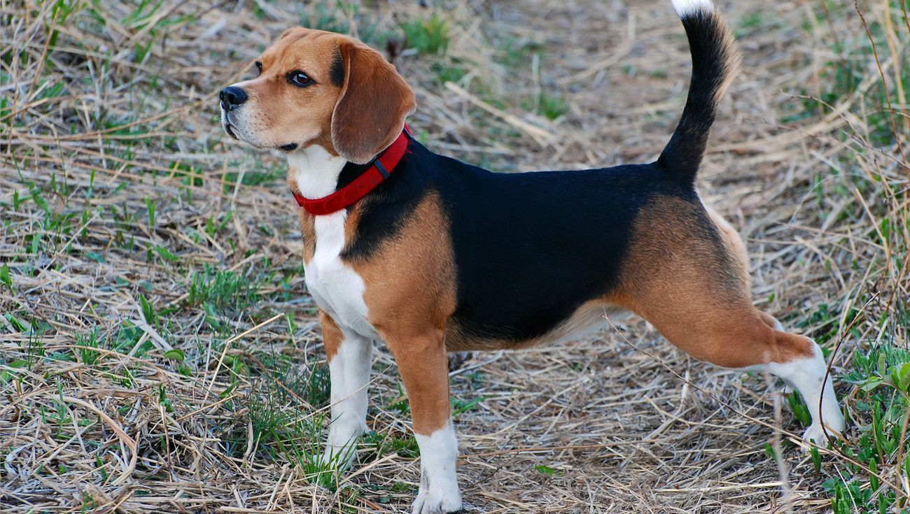

米格魯

特徵
垂耳：可說是米格魯最大的特徵與賣點。米格魯的耳朵規定不能長過鼻頭，且耳朵下緣是圓且寬。色澤：以黃、黑、白三元色為主。黃色：散佈於頭、耳朵、四肢的上半部、尾巴的下半部。黑色：主要在背部同時也是快速辨別是否為米格魯的最大象徵。白色：白色在最近常常被強調，因為以往以背部黑色做辨別的方法，隨著時代的改變已經不適用。標準的米格魯尾巴後端必須要有白色四隻腳也是，鼻梁一定有白色。體型：大約介於13吋到15吋之間，屬標準的中型犬。體格：腹部拍摸起來應該是強健有肉。尾巴：米格魯除了生病、飢餓或是心情不佳以外，尾巴幾乎都是往上翹，尾巴的弧度有如銳利的鐮刀。
性格
具親和力：米格魯天性活潑不怕生且非常喜歡親近人類。服從性高：米格魯愛親近人類，因此只要多加管教要訓練成名犬是非常簡單的事情。敏銳嗅覺：米格魯的鼻子嗅覺比起其他中型犬還要優秀，因此後來被人們訓練成檢疫偵測犬，現在世界各地的大機場都常能看到米格魯與人們一起執行過濾旅客是否有攜帶動植物入境的任務。運動力佳：米格魯的體力與耐力在狩獵犬中十分有名，因此對於喜歡與狗散步或者運動的人是絕佳的選擇。身體健康：經過美國獸醫學會與美國育犬協會的調查，米格魯患病機率在中型狗中是最少的，因此只要好好養育通常沒有生病的困擾。
歷史
米格魯與英國皇室的淵源頗深，約在十六世紀到十七世紀的時期英國正值狩獵風潮。英國皇室養育了許多名犬以配合皇家出遊打獵，而短小精悍的米格魯被訓練成專門狩獵小型獵物，而小型獵物中以兔子最為靈敏與珍貴，因此兔子經常是米格魯獵捕的重要對象。也因米格魯獵捕兔子成果驚人，因此被冠上「兔子殺手」的稱號，久而久之就被稱為獵兔犬。後來狩獵風潮逐漸退去，米格魯開始轉型成為家庭犬。活潑好動的米格魯在成為家庭犬之初並不太受歡迎，其原因為太過好動難以馴服，但在後來專業訓狗人士與獸醫的幫忙下逐漸適應人類的家庭生活，最後成為家庭犬的一份子。美國米格魯俱樂部與美國育犬協會曾做了粗略評估，現在全世界的米格魯大約有十萬隻上下，作為活潑可愛的家庭犬在世界各地活躍。
飼養注意事項
心臟病：米格魯的體質容易發胖，且發胖容易影響到心臟的負荷。許多米格魯都是由肥胖進而引發心臟病死亡，因此控制米格魯體重與預防心臟病就成了養育的注意事項。
極端咬合不正：此缺點雖然對米格魯影響不大，但如果米格魯凶性大發攻擊人的話，此牙齒排列容易撕傷人類的皮膚。
隱睪症：有計畫要讓雄性米格魯生育的主人要特別注意，米格魯的睪丸因不明原因，常常無法掉落到正常部位。
因此如果沒加以注意並治療，容易導致米格魯不孕。體臭：米格魯的汗腺比起其他狗種來說不是很發達，因此不經常洗澡很容易引起惡臭。